| 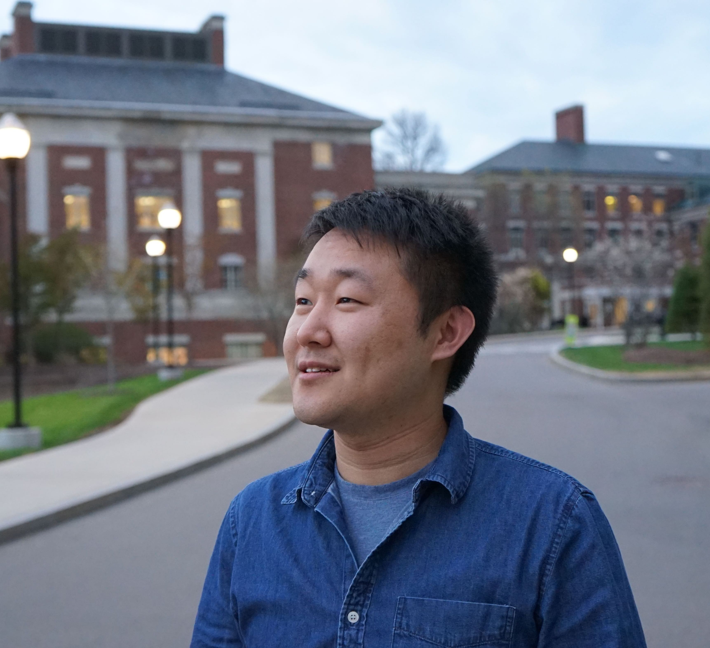 | Yapeng Tian PhD Candidate Department of Computer Science [Google Scholar][CV] [Github] [DBLP] |
Short bio
I am a Third-year PhD Candidate in the URCS. I received my M.E. degree from Tsinghua University in 2017, and B.E. degree from Xidian University in 2013.
My research recent interests are:
(1) vision and sound
(2) image and video restoration
News
[02/2020] Two papers on video restoration got accepted by CVPR 2020! Congratulations to All co-authors!
[01/2020] RDN is accepted by IEEE TPAMI! Congratulations to Yulun!
[12/2019] Please check our deep audio prior paper in ArXiv.
[08/2019] One paper is accepted by IEEE TIP. Congratulations to Xuechen!
[07/2019] One paper is accepted by ICCV 2019. Congratulations to Wei!
[05/2019] Our two works: audio-visual event localization and audio-visual video captioning will be presented in the CVPR 2019 Sight and Sound workshop.
[02/2019] I will serve as an ICCV 2019 reviewer.
[12/2018] Two papers are posted on ArXiv. Please watch the corresponding demos.
[07/2018] One paper is accepted by ECCV 2018! AVE dataset and codes have been released.
[03/2018] One paper is posted on ArXiv.
[02/2018] One paper is accepted by CVPR 2018. Congratulations to Yulun!
[07/2017] I recieve 'Outstanding Graduate of Tsinghua university' and ''Outstanding Master Thesis Award'.
[03/2017] I will join Prof. Chenliang Xu's lab to pursue a PhD degree at University of Rochester!
Publications
Vision and Sound
| 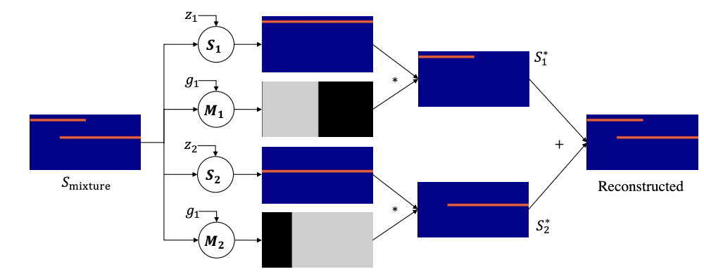 | Deep Audio Prior
|
 |
Interpretable and Controllable Audio-Visual Video Captioning
Yapeng Tian, Chenxiao Guan, Goodman Justin, Marc Moore, and Chenliang Xu
|
| 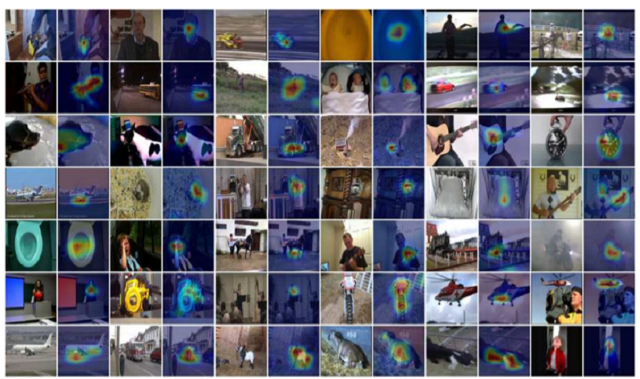 | Audio-Visual Event Localization in Unconstrained Videos
|
Video Restoration
| 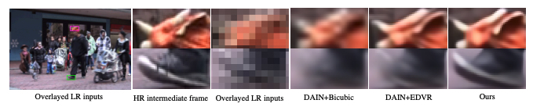 | Zooming Slow-Mo: Fast and Accurate One-Stage Space-Time Video Super-Resolution
|
| 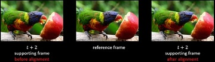 | TDAN: Temporally Deformable
Alignment Network for Video Super-Resolution
|
Image Restoration
| 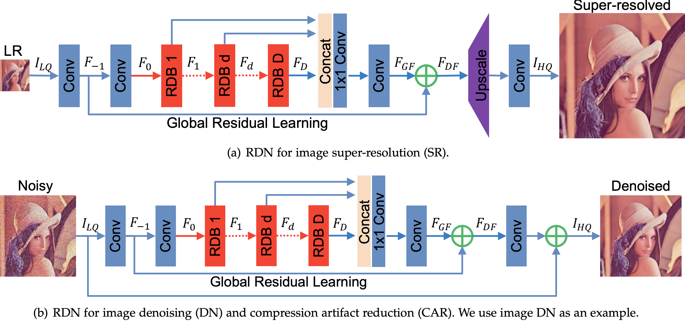 | Residual Dense Network for Image Restoration
|
| 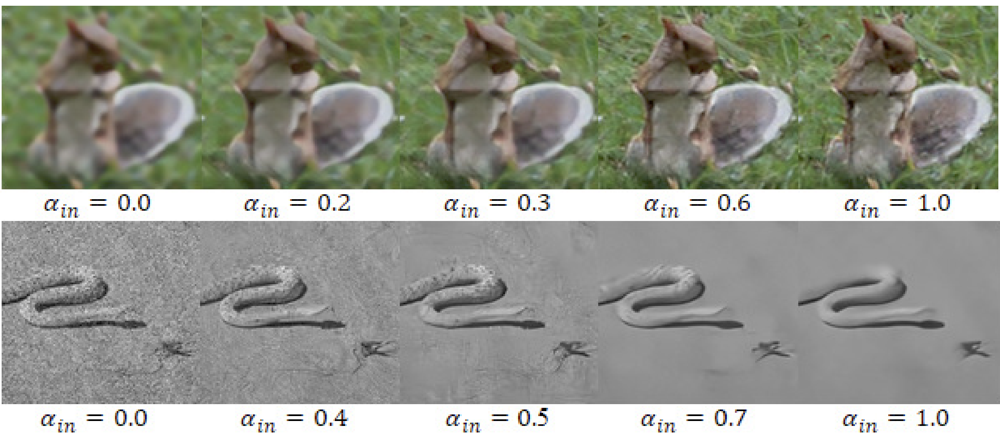 | CFSNet: Toward a Controllable Feature Space for Image Restoration
|
| 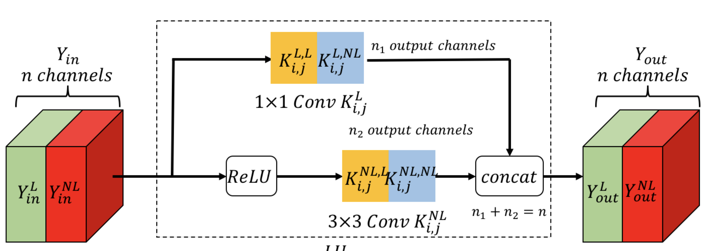 | LCSCNet: Linear Compressing Based Skip-Connecting Network for Image Super-Resolution
Wenming Yang, Xuechen Zhang, Yapeng Tian, Wei Wang, Jing-Hao Xue, Qingmin Liao
IEEE Trans. Image Processing (TIP), 2019. [Paper]
|
| 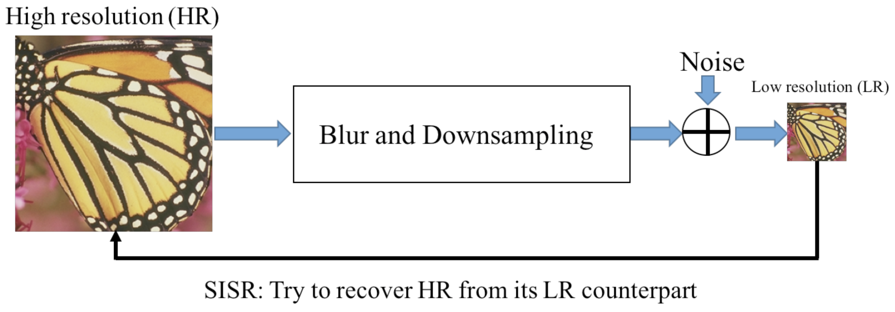 | Deep Learning for Single Image Super-Resolution: A Brief Review
Wenming Yang, Xuechen Zhang, Yapeng Tian, Wei Wang, Jing-Hao Xue, Qingmin Liao
IEEE Trans. Multimedia (TMM), 2019. [Paper]
|
| 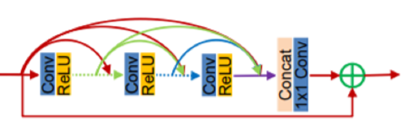 | Residual Dense Network for Image Super-Resolution
|
NTIRE 2017 Challenge on Single Image Super-Resolution: Methods and Results
Radu Timofte, Eirikur Agustsson, Luc Van Gool, ..., Xintao Wang, Yapeng Tian, Ke Yu, Yulun Zhang, Shixiang Wu, Chao Dong, Liang Lin, Yu Qiao, ...
CVPR Workshops, 2017. [PDF]
|
Consistent Coding Scheme for Single-Image Super-Resolution Via Independent Dictionaries
|
| 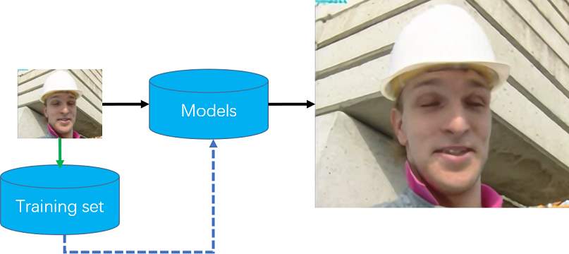 | Anchored Neighborhood Regression based Single Image Super-Resolution from Self-examples
|
| 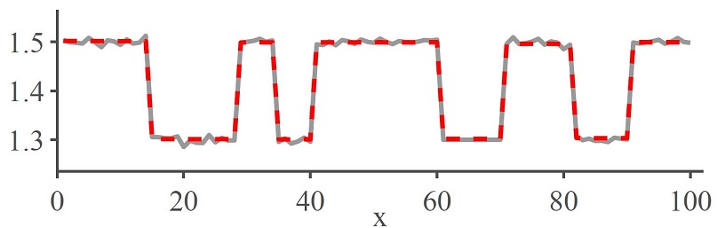 | Single-Image Super-Resolution Using Clustering-Based Global Regression and Propagation Filtering
Wenming Yang,Yapeng Tian, Fei Zhou, Tingrong Yuan, Xuesen Shang and Qingmin Liao
ACPR 2015, [PDF]
|
Awards
- Outstanding Graduate of Tsinghua University, 2017
- Outstanding Master Thesis Award, Tsinghua University, 2017
- National Scholarship (Ministry of Education, China, Top 2%), 2016
Professional Activities
- Conference Reviewer: CVPR 2019, ICCV 2019, AAAI 2020, CVPR 2020, ECCV 2020, NeurIPS 2020
- Journal Reviewer: CVIU, IEEE TCSVT, IEEE TMM, Computer Graphics Forum, IEEE SPL, IEEE Access, Journal of Electronic Imaging, Signal Processing: Image Communication, Neurocomputing